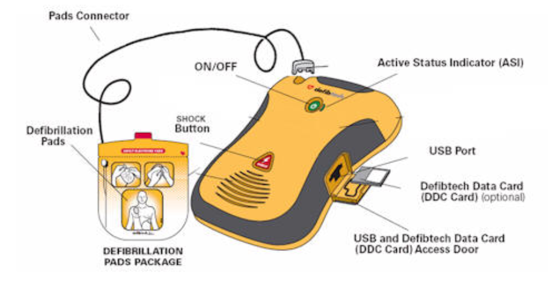

Background
An Automated External Defibrillator (AED) is used during sudden cardiac arrest.

Symptoms of sudden cardiac arrest:
- No pulse
- No breathing
- Unconsciousness
Where are AEDs typically kept?
In public spaces, AEDs are in easily accessible areas, such as:
- Information desks
- Security stations
- Break rooms
- Near entrances/exits
- Waiting rooms
- Central locations within the building
- Hallways and other high traffic areas
AEDs also have signage. Often, they're marked with a heart with a lightning bolt. These signs should be eye level and brightly colored. Some facilities may use directional signs to guide you to the nearest AED location.
In the event someone enters cardiac arrest, follow these steps:
- Check for consciousness and call emergency services.
- Begin CPR until an AED is available to you.
- When AED is available, turn on AED and follow its voice prompts.
Remove clothing from the victim and attach pads:
Remove clothing covering the chest. Wipe chest dry if needed.
Take the pads from the AED, place one pad on the upper right side of the chest.
-
The other pad goes on the lower left side of the chest, a few inches below the armpit.
If the pads touch each other, place one pad in the middle of the victim's chest and the other between the shoulder blades.
- Ensure pad connector cable is connected to AED.
Let the AED analyze the heart's rhythm.
Ensure no one is touching the victim.
Say, “Clear,” in a strong voice.
-
If the AED determines one is needed, deliver a shock. If no shock is advised, immediately start CPR.
Ensure no one is touching the patient.
Say, 'Clear,' in a strong voice.
Push the 'Shock' button to deliver the shock.
After the AED delivers the shock, immediately start CPR.